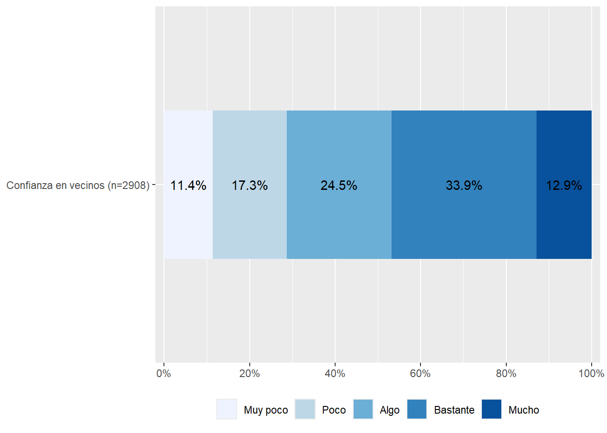
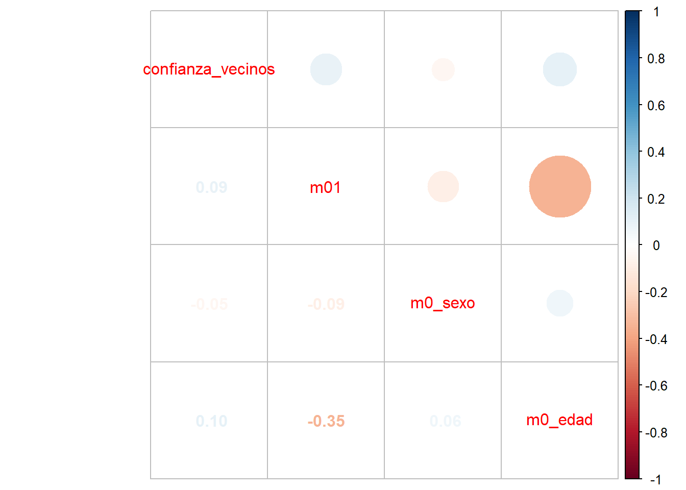
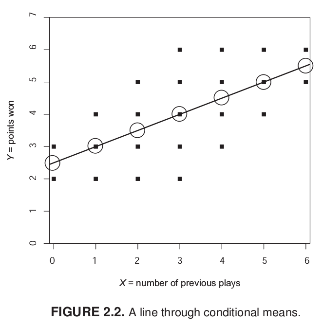
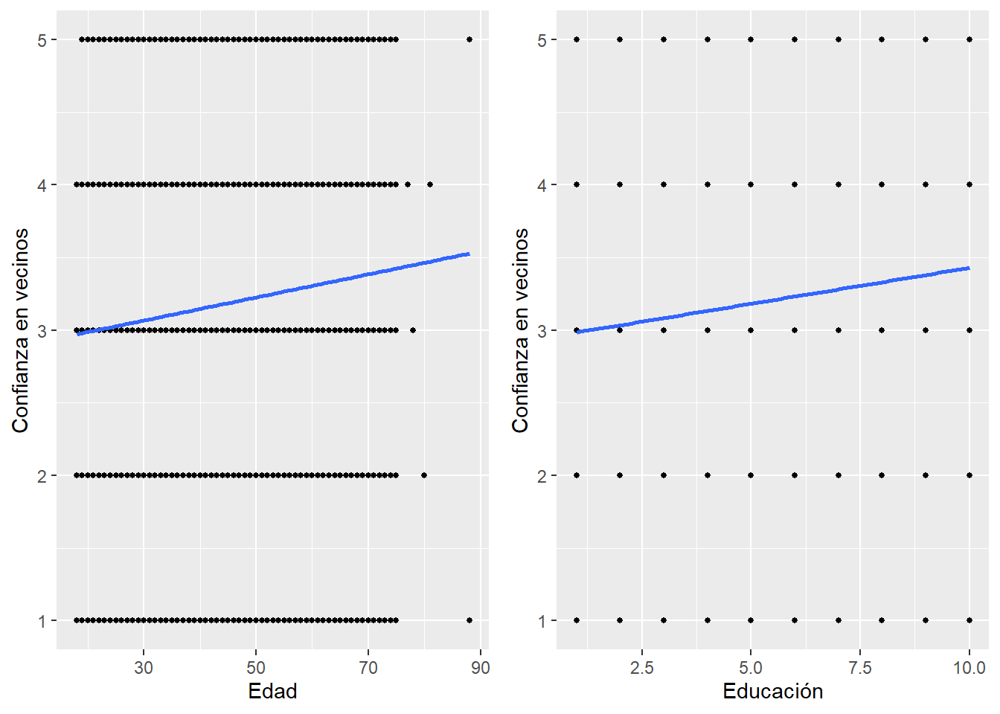

pacman::p_load(dplyr,
haven,
car,
sjmisc,
sjPlot,
sjlabelled,
stargazer,
kableExtra,
corrplot,
ggplot2,
ggpubr)Práctico 01. Regresión lineal I
Métodos estadísticos para Ciencias Sociales III
Presentación
Objetivo de la práctica
El desarrollo de esta guía tiene por objetivo revisar algunos procedimientos para la estimación de regresiones lineales en R.
Antecedentes de los datos a utilizar
Confianza en vecinos con elsoc 2016.
Análisis
1. Librerías principales (de R) a utilizar en el análisis
2. Cargar base de datos
Ajustar espacio de trabajo
Previo a la carga de nuestra base de datos, se recomienda ejecutar los siguientes comandos:
rm(list=ls()) # borrar todos los objetos en el espacio de trabajo
options(scipen=999) # valores sin notación científicaLa función rm(list=ls()) permite comenzar con un espacio de trabajo (environment) vacío y sin otros objetos. Así también, la función options(scipen=999) desactiva la notación científica, es decir, veremos los valores numéricos con todos sus decimales.
Datos
#cargamos la base de datos desde internet
load(url("https://dataverse.harvard.edu/api/access/datafile/7245118")) #Cargar base de datosRealizamos un chequeo básico de la lectura de datos: nombres de las variables y tamaño de la base en términos de casos y variables (en este ejemplo, 18035, 750 ).
dim(elsoc_long_2016_2022.2) # dimension de la base[1] 18035 7503. Selección de variables a utilizar
Este paso consiste en crear un subset reducido de datos que contenga solo las variables de interés. Para ello lo más fácil es revisar el libro de códigos de cada base de datos. Además filtramos por la ola 1 para trabajar solo con datos del 2016.
proc_data <- elsoc_long_2016_2022.2 %>% filter(ola=="1") %>%
select(t01, # Confianza en vecinos
m01,# nivel educacional
m0_sexo,# sexo
m0_edad# edad
)
# Comprobar
names(proc_data)[1] "t01" "m01" "m0_sexo" "m0_edad"Mediante el comando get_label obtenemos el atributo label de las variables.
sjlabelled::get_label(proc_data) t01 m01
"Cuanto confia usted en sus vecinos" "Nivel educacional"
m0_sexo m0_edad
"Sexo del entrevistado" "Edad del entrevistado" Podemos ver que son largas o con códigos poco informativos, por lo tanto, es necesario cambiarlas por etiquetas más cortas y de fácil identificación.
Procesamiento de variables
Para el procesamiento de cada variable se seguirá el siguiente flujo de trabajo:
- Descriptivo general
- Recodificación: de casos perdidos y otros valores (en caso necesario)
- Etiquetado: cambio de nombres de variables y valores (en caso necesario)
- Otros ajustes
Y se recomienda también un descriptivo final para revisar que el procesamiento de cada variable está ok.
Confianza en vecinos
a. Descriptivo
Para los descriptivos se utilizará la función frq, de la librería sjmisc:
frq(proc_data$t01)Cuanto confia usted en sus vecinos (x) <numeric>
# total N=2927 valid N=2927 mean=-2.78 sd=74.04
Value | Label | N | Raw % | Valid % | Cum. %
------------------------------------------------------------------------------
-999 | No Responde | 5 | 0.17 | 0.17 | 0.17
-888 | No Sabe | 14 | 0.48 | 0.48 | 0.65
-777 | Valor perdido por error tecnico | 0 | 0.00 | 0.00 | 0.65
-666 | Valor perdido por encuesta incompleta | 0 | 0.00 | 0.00 | 0.65
1 | Muy poco | 332 | 11.34 | 11.34 | 11.99
2 | Poco | 502 | 17.15 | 17.15 | 29.14
3 | Algo | 713 | 24.36 | 24.36 | 53.50
4 | Bastante | 987 | 33.72 | 33.72 | 87.22
5 | Mucho | 374 | 12.78 | 12.78 | 100.00
<NA> | <NA> | 0 | 0.00 | <NA> | <NA>En esta variable vemos valores asociados a la opción “No contesta” (-999) y “No sabe” (-888), (-777) y (-666) que corresponde definirlos como casos perdidos (en el caso de R, como casos NA). El resto de los valores y etiquetas se encuentran en un orden correcto.
b. Recodificación
Después de revisar el libro de códigos, no hay variables en que los valores negativos representen alguna otra característica, así que podemos usar set_na
proc_data <- proc_data %>% set_na(., na = c(-999, -888, -777, -666))frq(proc_data$t01)Cuanto confia usted en sus vecinos (x) <numeric>
# total N=2927 valid N=2908 mean=3.20 sd=1.20
Value | Label | N | Raw % | Valid % | Cum. %
-------------------------------------------------
1 | Muy poco | 332 | 11.34 | 11.42 | 11.42
2 | Poco | 502 | 17.15 | 17.26 | 28.68
3 | Algo | 713 | 24.36 | 24.52 | 53.20
4 | Bastante | 987 | 33.72 | 33.94 | 87.14
5 | Mucho | 374 | 12.78 | 12.86 | 100.00
<NA> | <NA> | 19 | 0.65 | <NA> | <NA>c - Etiquetado
Vamos a dar un nombre más sustantivo a las variables con la función rename, de la librería dplyr:
proc_data <- proc_data %>% rename("confianza_vecinos"=t01)Además de cambiar el nombre, queremos cambiar las etiquetas de las variables.
proc_data$confianza_vecinos <- set_label(x = proc_data$confianza_vecinos,label = "Confianza en vecinos")
get_label(proc_data$confianza_vecinos)[1] "Confianza en vecinos"Revisión final
Nuevamente un descriptivo de la variable para confirmar que el procesamiento está ok:
frq(proc_data$confianza_vecinos)Confianza en vecinos (x) <numeric>
# total N=2927 valid N=2908 mean=3.20 sd=1.20
Value | Label | N | Raw % | Valid % | Cum. %
-------------------------------------------------
1 | Muy poco | 332 | 11.34 | 11.42 | 11.42
2 | Poco | 502 | 17.15 | 17.26 | 28.68
3 | Algo | 713 | 24.36 | 24.52 | 53.20
4 | Bastante | 987 | 33.72 | 33.94 | 87.14
5 | Mucho | 374 | 12.78 | 12.86 | 100.00
<NA> | <NA> | 19 | 0.65 | <NA> | <NA>4.2. Educación
- [
m01] = Nivel de estudios alcanzado - Entrevistado
a. Descriptivo
frq(proc_data$m01)Nivel educacional (x) <numeric>
# total N=2927 valid N=2925 mean=5.26 sd=2.20
Value | Label | N | Raw % | Valid % | Cum. %
------------------------------------------------------------------------------------
1 | Sin estudios | 37 | 1.26 | 1.26 | 1.26
2 | Educacion Basica o Preparatoria incompleta | 322 | 11.00 | 11.01 | 12.27
3 | Educacion Basica o Preparatoria completa | 297 | 10.15 | 10.15 | 22.43
4 | Educacion Media o Humanidades incompleta | 394 | 13.46 | 13.47 | 35.90
5 | Educacion Media o Humanidades completa | 857 | 29.28 | 29.30 | 65.20
6 | Tecnica Superior incompleta | 102 | 3.48 | 3.49 | 68.68
7 | Tecnica Superior completa | 381 | 13.02 | 13.03 | 81.71
8 | Universitaria incompleta | 186 | 6.35 | 6.36 | 88.07
9 | Universitaria completa | 303 | 10.35 | 10.36 | 98.43
10 | Estudios de posgrado (magister o doctorado) | 46 | 1.57 | 1.57 | 100.00
<NA> | <NA> | 2 | 0.07 | <NA> | <NA>Esta vez la vamos a dejar así
4.3. Sexo
- [
m0_sexo] = SEXO Sexo
a. Descriptivo
frq(proc_data$m0_sexo)Sexo del entrevistado (x) <numeric>
# total N=2927 valid N=2927 mean=1.60 sd=0.49
Value | Label | N | Raw % | Valid % | Cum. %
------------------------------------------------
1 | Hombre | 1163 | 39.73 | 39.73 | 39.73
2 | Mujer | 1764 | 60.27 | 60.27 | 100.00
<NA> | <NA> | 0 | 0.00 | <NA> | <NA>4.4 Edad
- [
m0_edad] = EDAD Edad.
a. Descriptivo
summary(proc_data$m0_edad) Min. 1st Qu. Median Mean 3rd Qu. Max.
18.00 33.00 46.00 46.09 58.00 88.00 Análisis descriptivo
sjmisc::descr(proc_data,
show = c("label","range", "mean", "sd", "NA.prc", "n"))%>% # Selecciona estadísticos
kable(.,"markdown") # Esto es para que se vea bien en quarto| var | label | n | NA.prc | mean | sd | range | |
|---|---|---|---|---|---|---|---|
| 1 | confianza_vecinos | Confianza en vecinos | 2908 | 0.6491288 | 3.195667 | 1.202232 | 4 (1-5) |
| 2 | m01 | Nivel educacional | 2925 | 0.0683293 | 5.260513 | 2.201502 | 9 (1-10) |
| 4 | m0_sexo | Sexo del entrevistado | 2927 | 0.0000000 | 1.602665 | 0.489430 | 1 (1-2) |
| 3 | m0_edad | Edad del entrevistado | 2927 | 0.0000000 | 46.090878 | 15.286798 | 70 (18-88) |
En la Tabla 1 podemos observar los descriptivos generales de la base de datos procesada. Notemos la Media de confianza en vecinos = 3.20
Y si queremos visualizar algo más:
proc_data %>% dplyr::select(confianza_vecinos) %>%
sjPlot::plot_stackfrq()+
theme(legend.position = "bottom")

Asociación de variables
Podemos ver la asociación de todas las variables, como lo muestra la ?@cor-complete
M <- cor(proc_data, use = "complete.obs") # Usar solo casos con observaciones completascorrplot.mixed(M)

La Figura 2 muestra que la asociación de la confianza en vecinos es baja, siendo positiva para educación y edad, y negativa para sexo. La asociación más alta es entre educación y edad, siendo negativa (-0,35).
Medias condicionales
Antes de avanzar desde la correlación al método de regresión es importante conocer el concepto de media condicional.
Imaginemos un juego de tacataca con dos variables: cantidad de juegos previos y puntos obtenidos en un partido. En estas variables, el promedio de puntos es 4. Es decir, si conocemos a algún individuo que pertence al grupo de “datos”, sabemos que su puntaje se encuentra probablemente cercano a 4. ¿Podemos mejorar nuestra estimación utilizando el puntaje de X? Si el sujeto nos dice que ha jugado antes 6 veces, probablemente vamos a estimar un puntaje superior de puntos, tal vez más cercano a 6.
Lo que estamos haciendo es utilizar la información que conocemos de X para dar una estimación de Y, que sea más precisa que el promedio bruto.

Mirando el gráfico de nube de puntos, sabemos que tres personas han jugado antes una vez, pero una de ellas tuvo 2 puntos, otra 3 y otra 4. Con estos datos podemos calcular la media de Y para X=1, que sería igual a 3. En otras palabras, la media condicional de Y cuando X=1 es 3. Con esto, uno podría calcular la media condicional para cada punto de X y hacer una estimación más precisa de Y. Sin embargo, este proceso todavía no nos permite generalizar más eficientemte la relación entre X e Y.
¿Cuántos puntos (Y) se obtienen según la experiencia previa de juego (X)? Esta pregunta nos conduce al cálculo de una recta que atraviese los puntos y que generalice la relación entre X e Y.
Residuos
En el gráfico anterior vemos que la línea resume la relación entre X e Y, pero claramente es una simplificación que no abarca toda la variabilidad de los datos.
Por ejemplo, para el sujeto cuya experiencia es haber jugado 1 vez y luego gana 3 puntos, esta línea predice exáctamente su puntaje basada en su experiencia. Sin embargo, el sujeto que ha jugado 3 veces y saca 6 puntos se encuentra más lejos de la línea y por lo tanto esta línea o “modelo predictivo” no representa tan bien su puntaje. A esto se refieren los residuos, que es la diferencia entre el valor predicho (o \(\widehat{Y}\)) y el observado \(Y\), siendo los valores predichos de Y los que pasan por la recta a la altura de cada valor de X. Por lo tanto, la mejor recta será aquella que minimice al máximo los residuos.

El sentido de la recta que resume de mejor manera la relación entre dos variables es que minimice la suma de todos los residuos. ¿Cómo realizar este procedimiento?
Para realizar la suma de los residuos estos se elevan al cuadrado, lo que se denomina Suma de residuos al cuadrado o \(SS_{residual}\). Se eleva al cuadrado ya que como hay residuos positivos y negativos, unos cancelarían a otros y la suma seía 0, tal como sucede en la formula de la varianza.
De la infinita cantidad de rectas que se pueden trazar, siempre hay una que tiene un valor menor de \(SS_{residual}\). Este procedimiento es el que da nombre al proceso de estimación: mínimos (residuos) cuadrados ordinarios, o OLS (Ordinary Least Squares).
¿Cómo funciona esto con nuestro ejemplo?
#Grafico x1 = ACT
graph1 <- ggplot(proc_data, aes(x = m0_edad, y = confianza_vecinos)) +
geom_point(size = 1) + # Puntos
geom_smooth(method = "lm", se = FALSE) + # Recta de regresión
labs(x = "Edad", y = "Confianza en vecinos") # Etiquetas de ejes
# Gráfico 2
graph2 <- ggplot(proc_data, aes(x = m01, y = confianza_vecinos)) +
geom_point(size = 1) +
geom_smooth(method = "lm", se = FALSE) +
labs(x = "Educación", y = "Confianza en vecinos")
ggarrange(graph1, graph2, nrow = 1) # Unir graficos
Con el gráfico anterior podemos notar que, si bien ambas variables tienen una asociación positiva con la confianza en vecinos, el tamaño efecto de esta relación es distinto.
Regresiones
Para facilitar la interpretación de los coeficientes de regresión nos aseguramos que las variables categóricas estén como variables categóricas con as_factor. De esta forma nos aseguramos que la estimación de los modelos sea correcta ya que no se puede interpretar sexo como si fuera una variable numérica.
proc_data$sexo <- as_factor(proc_data$m0_sexo)
proc_data <- na.omit(proc_data)
reg1 <- lm(confianza_vecinos ~ 1, data=proc_data)
tab_model(reg1,
show.ci = FALSE)| confianza vecinos | ||
| Predictors | Estimates | p |
| (Intercept) | 3.20 | <0.001 |
| Observations | 2906 | |
| R2 / R2 adjusted | 0.000 / 0.000 | |
¿Qué valor toma una regresión lineal cuando no incluímos predictores en nuestro modelo?
En este caso, lo que nos interesa observar es el intercepto. Un intercepto de 3.20 nos indica la media de la confianza en vecinos.
Regresión lineal simple
Una regresión lineal simple es aquel modelo que incluye solo un predictor. En este caso construiremos tres modelos distintos con tres variables independientes, es decir, reg2 que incluye como predictor ‘edad’, reg3 incluye educación y reg4 incluye sexo.
reg2 <- lm(confianza_vecinos ~ m0_edad, data=proc_data)
reg3 <- lm(confianza_vecinos ~ m01, data=proc_data)
reg4 <- lm(confianza_vecinos ~ sexo, data=proc_data)
tab_model(reg2, reg3, reg4,
show.ci = FALSE,
pred.labels = c("Intercepto",
"Edad",
"Educación",
"Sexo"))| confianza vecinos | confianza vecinos | confianza vecinos | ||||
| Predictors | Estimates | p | Estimates | p | Estimates | p |
| Intercepto | 2.83 | <0.001 | 2.94 | <0.001 | 3.27 | <0.001 |
| Edad | 0.01 | <0.001 | ||||
| Educación | 0.05 | <0.001 | ||||
| Sexo | -0.12 | 0.010 | ||||
| Observations | 2906 | 2906 | 2906 | |||
| R2 / R2 adjusted | 0.010 / 0.010 | 0.008 / 0.008 | 0.002 / 0.002 | |||
La interpretación de una tabla de regresión debe seguir el orden de presentación de los modelos y el orden de los coeficientes de regresión. En este ejemplo se dará el paso a paso de cómo interpretar las tablas:
En el Modelo 1 se incluye edad como predictor, que tiene un coeficiente de regresión de 0,01. Esto indica que por cada unidad que aumenta edad, la confianza en vecinos aumenta en promedio 0,01 unidades. El intercepto es de 2,83, lo que indica que (teóricamente) una persona con edad 0 tendría un promedio de confianza en vecinos de 2,83. Finalmente, el modelo 1 logra explicar el 1% de la varianza de la variable dependiente (R2=0,01).
El Modelo 2 incluye la educación de los/as encuestados como variable independiente. Este Modelo indica que por cada unidad que aumenta la educación, la confianza en vecinos aumenta en promedio 0,5 unidades. Si observamos el intercepto, este nos indica que el promedio de confianza en vecinos para las personas sin educación es de 2.94.
El modelo 3 indica que las mujeres tendrían -0,12 unidades en la confianza en vecinos en comparación con los hombres. ¿Cómo sabemos que este el efecto de las mujeres? ¿Por qué no al revés? ¿Por qué “en comparación” con los hombres?
Tarea
Selección de variables
Cargar paquetes, cargar base de datos ELSOC y filtrar por la ola 4 (2019).
Seleccionar las siguientes variables:
Satisfacción con la democracia: c01
Sociodemográficas: m01 (educación), m0_sexo (sexo), m0_edad (edad).
Definir cuál es la variable dependiente y cuáles las independientes
Operacionalización de variables
Recodificar valores perdidos (-999, -888, -777, -666) como NA.
Cambiar etiquetas para que sean más descriptivas.
Análisis
Gráfico descriptivo para satisfacción con la democracia
Estimar, visualizar e interpretar una matriz de correlaciones con las 4 variables principales.
Estimar tres modelos de regresión lineal simple
Modelo 1: satisfaccion_democracia ~ sexo
Modelo 2: satisfaccion_democracia ~ educacion
Modelo 3: satisfaccion_democracia ~ edad
Reporte
Presentar una tabla con los tres modelos.
Incluir un párrafo breve (máx. 200 palabras) interpretando los coeficientes y \(R^2\).